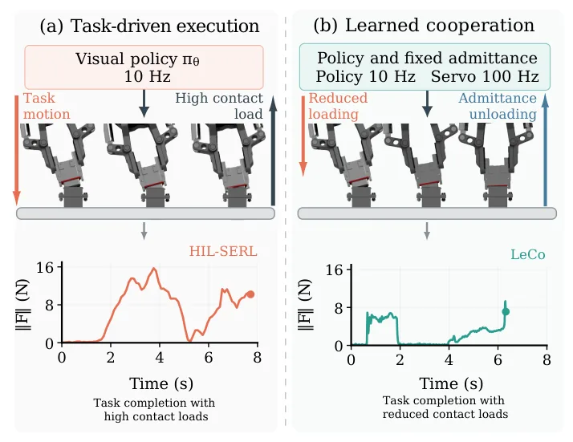
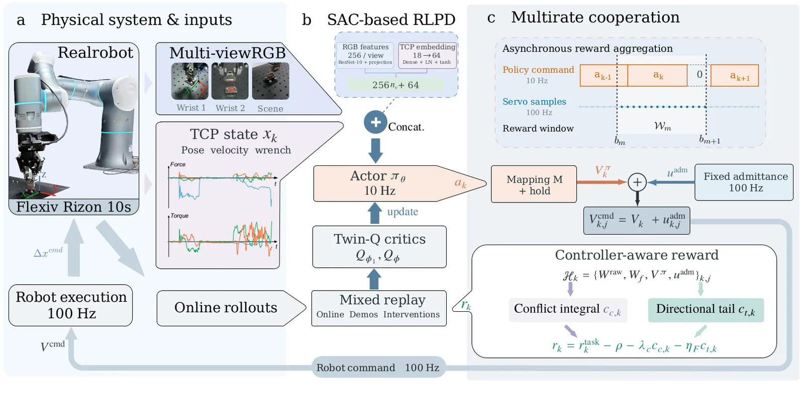
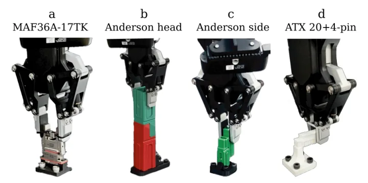
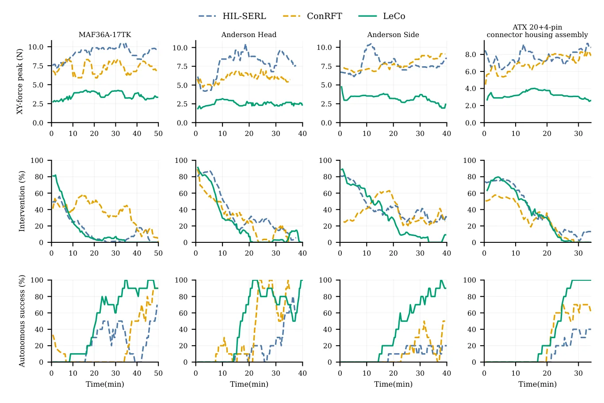

O problema: empurrar contra a parede não ajuda a encaixar
Montagem autônoma de conectores exige que o robô corrija desalinhamentos enquanto avança a peça até o encaixe final. Força demais impede progresso; força de menos impede conclusão. Aprendizado por reforço visual e controle complacente são duas ferramentas poderosas para lidar com incerteza de contato, mas combiná-las não garante cooperação.
Quando um conector encontra uma borda, a política aprendida pode continuar comandando movimento para frente enquanto o controlador de admitância cede na direção oposta, gerando carga de contato sustentada sem avanço útil. Recompensa de conclusão de tarefa sozinha não distingue correção breve e necessária de oposição repetida entre comandos. Picos de força também podem ocorrer tanto durante carregamento contínuo quanto durante retirada de um contato já carregado.
O problema também envolve taxas de atualização diferentes. Decisões de política e controle de contato operam em frequências distintas: uma transição de política pode conter várias respostas do controlador. A observação final pode perder oposição anterior; uma média de intervalo pode diluir um evento breve de carregamento, enquanto um máximo sozinho não descreve duração.

A ideia: transformar interação multirate em sinal de aprendizado
LeCo (Leverage Compliance) é um framework de aprendizado política-admitância que guia uma política visual através de interação em tempo de execução sob admitância fixa. A proposta central é agregar registros de interação de contato em alta taxa ao longo de intervalos associados a transições de política, fornecendo feedback de aprendizado na taxa da política.
O método constrói dois custos de interação integrados à recompensa de aprendizado por reforço. O primeiro é um custo de conflito que caracteriza oposição sustentada entre carregamento pela política e descarregamento pelo controlador. O segundo é um custo direcional de cauda de força alta que captura eventos de carregamento contínuo dentro de uma transição. Juntos com conclusão de tarefa, esses custos encorajam a política a aproveitar a complacência com menos carregamento improdutivo.
O controlador de admitância permanece com parâmetros fixos durante todo o aprendizado e execução. Não há ajuste de rigidez, não há mudança de ganhos. A única mudança está na função de recompensa que guia o aprendizado da política visual.
Como funciona: agregação multirate e custos de cooperação
A política visual opera a 10 Hz e emite comandos de twist residual (velocidades lineares e angulares). O controlador de admitância opera a 100 Hz, recebe leituras de força/torque (wrench) do sensor do robô e ajusta o movimento comandado. Para cada transição de política, o sistema registra uma janela de execução que contém múltiplas amostras de controle.
O custo de conflito mede oposição sustentada. Para cada amostra dentro da janela, o método calcula a potência de conflito: o produto escalar negativo entre o twist comandado pela política e o twist de descarregamento gerado pelo controlador de admitância. Valores positivos indicam que a política está empurrando enquanto o controlador está cedendo. Esse produto é então integrado ao longo da janela, capturando duração e intensidade da oposição.
O custo de cauda direcional captura eventos de força alta durante carregamento contínuo. Para cada amostra, o método verifica se a força excede um limiar suave e se a potência de carregamento (produto entre força e twist comandado) é positiva, indicando que a política está empurrando na direção da força. O custo é o máximo desse termo ao longo da janela, preservando o evento mais forte. Forças altas durante retirada ou correções ortogonais à força não são penalizadas.
Ambos os custos são normalizados e somados à recompensa esparsa de conclusão de tarefa e penalidade de tempo. O replay buffer do algoritmo SAC/RLPD armazena essas recompensas aumentadas, e a política é treinada para maximizar retorno esperado, o que implica minimizar conflito e carregamento direcional alto enquanto completa a tarefa.

Experimentos: quatro tarefas reais de montagem
Os autores avaliaram LeCo em quatro tarefas reais de montagem de conectores usando um braço robótico Flexiv Rizon 10s. As tarefas diferem em geometria, restrições de encaixe e modos de contato. Inserção de conector de aviação MAF36A-17TK exige correção de pose inicial para evitar travamento e força axial suficiente para assentamento final. Inserção de cabeça Anderson exige manutenção de alinhamento após contato com o invólucro.
Intertravamento lateral Anderson une características de cauda de andorinha lateral, onde pequenos deslocamentos podem criar resistência substancial. Montagem de invólucro de conector ATX 20+4 pinos exige alinhar características-guia de acoplamento dos invólucros de 20 e 4 pinos de um conector de alimentação de placa-mãe e deslizá-los juntos, demandando alinhamento local preciso. Juntas, as tarefas testam o equilíbrio entre avanço necessário e carregamento improdutivo.
Cada tarefa usou 40 demonstrações bem-sucedidas. LeCo usou um codificador ResNet-10 com imagens 128×128. A política e as taxas de admitância foram configuradas em 10/100 Hz, com filtro de wrench de 15 Hz. Os parâmetros do controlador de admitância (inércia virtual, amortecimento, deadbands, limites de velocidade) permaneceram inalterados durante aprendizado e avaliação.

Comparação com baselines: menos força, mais sucesso
LeCo foi comparado com HIL-SERL e ConRFT, dois métodos recentes de aprendizado para robótica de contato. HIL-SERL aprende de demonstrações, recompensas esparsas e correções online. ConRFT combina treinamento offline com ajuste fino reforçado online. Todos os métodos compartilharam o mesmo controlador de baixo nível, configuração ator-aprendiz assíncrona, contagens de demonstração, layouts visuais, espaços de ação e operador. HIL-SERL e ConRFT não usaram camada de admitância adicional; LeCo adicionou a admitância fixa.
Na tarefa de conector de aviação, LeCo obteve 19/20 sucessos e reduziu comprimento mediano de tentativas bem-sucedidas de 46 passos (ConRFT) para 33 passos. Picos médios de força em tentativas bem-sucedidas diminuíram de 10,70 para 7,76 N, e picos de torque de 1,57 para 0,72 N·m, indicando melhorias tanto em conclusão de tarefa quanto em qualidade de contato.
Na inserção de cabeça Anderson, tanto LeCo quanto ConRFT completaram todos os 30 ensaios. ConRFT exigiu quatro passos medianos a menos, mas LeCo reduziu picos médios de força e torque em aproximadamente 15% e 62%, respectivamente. O benefício de LeCo não requer o menor número de passos em todas as tarefas; ele reduz cargas de contato enquanto mantém sucesso de tarefa.
No intertravamento lateral Anderson, LeCo obteve 17/20 sucessos contra 13/20 do ConRFT, com picos médios de força lateral reduzidos de 9,53 para 2,85 N. Na montagem ATX 20+4 pinos, LeCo obteve 28/30 sucessos com mediana de 26 passos e picos de força e torque menores que os baselines. Agregando as quatro tarefas, LeCo alcançou taxa de sucesso de 94%.

Ablação de recompensa: papéis complementares
Para isolar as contribuições dos dois custos de cooperação, os autores conduziram uma ablação 2×2 na tarefa de conector de aviação. A0 usou apenas recompensa de tarefa. A1 adicionou modelagem de conflito. A2 é um baseline ciente de força apenas com modelagem direcional de cauda de força alta. LeCo incluiu adicionalmente o custo completo de conflito lateral e rotacional. Todas as condições compartilharam penalidade de tempo, observações, espaço de ação, demonstrações e controlador de admitância fixo.
A0 (apenas tarefa) obteve 15/20 sucessos com mediana de 43 passos. A1 (apenas conflito) obteve 12/20 sucessos com 88,5 passos, indicando que conflito sozinho não é suficiente para conclusão eficiente. A2 (apenas cauda) obteve 18/20 sucessos com 46 passos. LeCo (conflito + cauda) obteve 19/20 sucessos com 33 passos, o melhor desempenho em ambas as métricas.
A análise mecânica incluiu todas as tentativas, não apenas bem-sucedidas. Adicionar modelagem de cauda (A0→A2, A1→LeCo) reduziu densidade de força alta e aumentou sucesso, suportando inserção confiável. Adicionar modelagem de conflito (A0→A1, A2→LeCo) reduziu integral de conflito e densidade de conflito condicionado a contato, indicando menos oposição sustentada. A combinação encurtou trajetórias bem-sucedidas e reduziu exposição acumulada de força, torque e conflito de comando.
Interpretação física dos custos
O apêndice do paper fornece interpretação física dos custos de interação. Para sinais contínuos em um intervalo fixo, amostragem cada vez mais fina faz a soma discreta do conflito aproximar a integral contínua, e o máximo discreto da cauda aproximar o supremo contínuo. Os custos assim preservam duração de conflito e o evento direcional de força alta mais forte, respectivamente.
Seja n_k(P_0) a contagem de amostras com conflito de força acima de um limiar P_0 > 0, e E_k a existência de uma amostra com força bruta acima de F_0 e potência de carregamento acima de P_0. Não-negatividade de conflito rotacional e monotonicidade do portão de força fornecem limites: n_k(P_0) é limitado pela expectativa do custo de conflito dividido por ΔtP_0, e o indicador E_k é limitado pelo custo de cauda dividido por constantes de portão.
Somação descontada e expectativa preservam ambas as desigualdades. Os limites resultantes descrevem exposição esperada de conflito e eventos de carregamento contínuo de força alta. Retirada e correções ortogonais à força permanecem não penalizadas pelo termo direcional. O paper também mostra que o operador de Bellman de política fixa permanece uma contração após adicionar custos de interação limitados, preservando convergência para função de valor única.
O que o paper não mostra: limitações e escopo
Os experimentos usaram fixações fixas e conjuntos de avaliação limitados. Transferência entre robôs e efetuadores finais não foi testada. Robustez a perturbações, movimento de peças de trabalho, fricção e mudanças de folga de acoplamento permanecem para serem avaliadas sob variações controladas. O paper declara explicitamente essas limitações.
Todas as tarefas envolveram conectores rígidos com geometrias bem definidas. Montagem de peças deformáveis, cabos flexíveis ou componentes com variabilidade dimensional não foram abordadas. O método também assume disponibilidade de leituras de força/torque de alta taxa, o que pode não estar presente em todos os sistemas robóticos.
O aprendizado foi conduzido com um operador humano fornecendo demonstrações e correções online. A quantidade de supervisão humana necessária e o tempo total de aprendizado (incluindo tempo humano) não são comparados diretamente entre métodos. ConRFT inclui fase offline que não aparece no tempo online reportado nas figuras.
Os parâmetros de admitância foram escolhidos manualmente e mantidos fixos. O paper não explora como diferentes escolhas de inércia virtual, amortecimento ou deadbands afetariam desempenho de aprendizado ou qualidade de contato final. Sensibilidade a esses hiperparâmetros permanece uma questão em aberto.
Conclusão: controle complacente como supervisor de aprendizado
LeCo ensina uma política visual a aproveitar admitância fixa convertendo interação em tempo de execução em recompensas de aprendizado por reforço. Uma integral de conflito captura oposição sustentada entre carregamento pela política e descarregamento por admitância, enquanto um custo de cauda direcional retém eventos breves de carregamento de força alta. Os parâmetros do controlador, interface de política e estrutura de implantação permanecem inalterados.
Quatro tarefas reais de montagem de conectores mostraram aquisição autônoma melhorada e cargas de contato reduzidas. Ablações identificaram papéis complementares: modelagem de cauda suporta inserção confiável, e modelagem de conflito reduz oposição dentro de comportamento produtivo. Sua combinação encurta trajetórias bem-sucedidas e reduz exposição acumulada de força, torque e conflito de comando, sem implicar cargas instantâneas menores em todo momento.
Esses achados suportam usar um controlador complacente existente como fonte de supervisão de aprendizado, além de mecanismo de execução. A abordagem não requer ajuste de parâmetros de controle nem aprendizado de rigidez variável, apenas reformulação de recompensa que conecta decisões de política a consequências de contato através de agregação multirate.
O que fica
- LeCo coordena política visual (10 Hz) com controle de admitância fixo (100 Hz) usando custos de conflito e cauda de força alta agregados sobre janelas de transição.
- Em quatro tarefas reais de montagem, LeCo alcançou 94% de sucesso com reduções de ~30% em força e ~64% em torque comparado a baselines, sem ajustar parâmetros do controlador.
- Ablação mostra papéis complementares: custo de cauda suporta inserção confiável; custo de conflito reduz oposição sustentada entre comando de política e descarregamento do controlador.
- Limitações: fixações fixas, conjuntos de avaliação pequenos, sem teste de transferência entre robôs ou robustez a variações de fricção e folga de acoplamento.
Paper original: Learning to Leverage Compliance: A Policy-Admittance Learning Framework for Robotic Insertion
Comentários
Nenhum comentário ainda. Seja o primeiro.